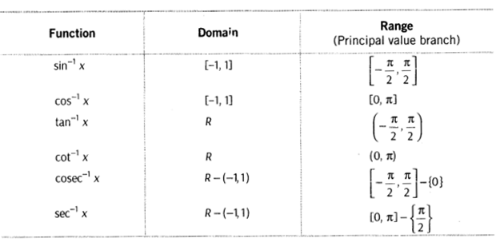
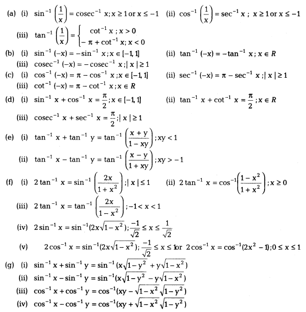
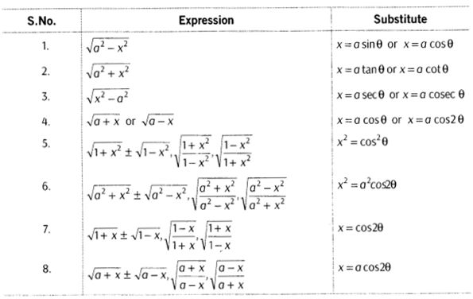
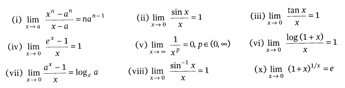
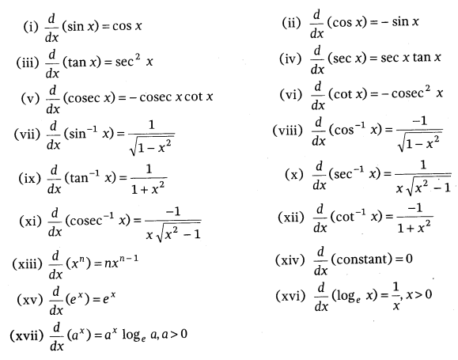

Chapter 1:Relations and Funtions
A relation R from set X to a set Y is defined as a subset of the cartesian product X × Y. We can also write it as R ⊆ {(x, y) ∈ X × Y : xRy}.
Note: If n(A) = p and n(B) = q from set A to set B, then n(A × B) = pq and number of relations = 2pq.
Types of Relation
Empty Relation: A relation R in a set X, is called an empty relation, if no element of X is related to any element of X,
i.e. R = Φ ⊂ X × X
Universal Relation: A relation R in a set X, is called universal relation, if each element of X is related to every element of X,
i.e. R = X × X
Reflexive Relation: A relation R defined on a set A is said to be reflexive, if
(x, x) ∈ R, ∀ x ∈ A or
xRx, ∀ x ∈ R
Symmetric Relation: A relation R defined on a set A is said to be symmetric, if
(x, y) ∈ R ⇒ (y, x) ∈ R, ∀ x, y ∈ A or
xRy ⇒ yRx, ∀ x, y ∈ R.
Transitive Relation: A relation R defined on a set A is said to be transitive, if
(x, y) ∈ R and (y, z) ∈ R ⇒ (x, z) ∈ R, ∀ x, y, z ∈ A
or xRy, yRz ⇒ xRz, ∀ x, y,z ∈ R.
Equivalence Relation: A relation R defined on a set A is said to be an equivalence relation if R is reflexive, symmetric and transitive.
Equivalence Classes: Given an arbitrary equivalence relation R in an arbitrary set X, R divides X into mutually disjoint subsets A, called partitions or sub-divisions of X satisfying
Chapter 2:Inverse Trignometric functions


Following substitutions are used to write inverse trigonometric functions in simplest form:

Chapter 3:Continuity and Differentiality
Continuity at a Point: A function f(x) is said to be continuous at a point x = a, if
Left hand limit of f(x) at(x = a) = Right hand limit of f(x) at (x = a) = Value of f(x) at (x = a)
i.e. if at x = a, LHL = RHL = f(a)
where, LHL = \lim _{ x\rightarrow { a }^{ - } }{ f(x) } and RHL = \lim _{ x\rightarrow { a }^{ + } }{ f(x) }
Note: To evaluate LHL of a function f(x) at (x = o), put x = a – h and to find RHL, put x = a + h.
Standard Results of Limits

Some Standard Derivatives
